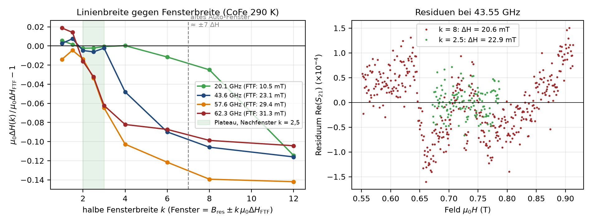

Ablauf der Auswertung¶
fenster = auto_fenster_alle(ds, gamma, breite_faktor) # Phase 1: Fenster je Frequenz
for i, ls in enumerate(ds.linescans): # Phase 2: je Frequenz
ergebnis, beschnitten, verwendet = fitte_mit_nachfenster(
ls, fenster[i], gamma, alpha_max=alpha_max, nachfenster_faktor=2.5)
# 1. Fit auf Detektionsfenster -> 2. Fit auf B_res ± 2,5·ΔH (nur übernommen, wenn unproblematisch)
| Regel Nachfenster | Wert |
|---|---|
| Fenster | B_res ± faktor·µ0ΔH (Standard 2,5; 0 = aus), nie erweitern |
| Mindestpunkte / Halbbreite | ≥ 12 Punkte, ≥ 6 Feldschritte |
| Übernahme | nur wenn 2. Fit erfolgreich und nicht problematisch |
| Grund | auf ±7 ΔH passt der lineare Untergrund nicht → ΔH 5–15 % zu klein (Benchmark) |

StapelErgebnis: fenster, zugeschnitten, ergebnisse, ausschlusszonen, ausreisser, ausreisser_moden, nebenmoden (Ergebnisse der Moden ≥ 2), alpha_plausibel, nachfit_bestaetigen; ergebnisse_mode(k), moden_vorhanden(), index_problematisch(), index_gefittet(), problem_statistik(), ergebnisse_aktiv(), bewerte(i, art).
Nachfit einzeln: fitte_neu(stapel, index, feld_unten, feld_oben, startwerte, B_res_vorgabe, bestaetigen, mode); je Mode im Korridor: fitte_mode(stapel, index, korridor), alle Frequenzen: fitte_korridor(stapel, korridor, schritt). Ohne Auto-Fit: leerer_stapel(ds) (Platzhalter je Frequenz, gefittet=False).